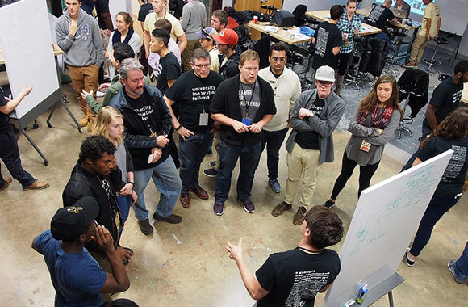
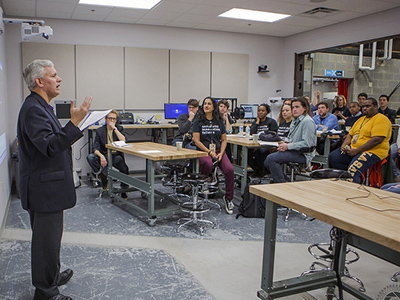
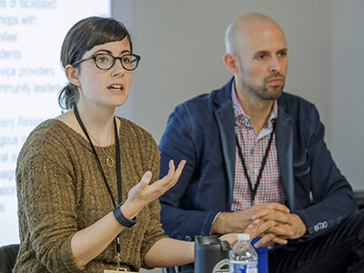
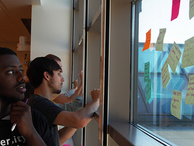

University Innovation Fellows shared strategies for student-led change in higher education at the James Madison University Regional Meetup in November 2015.

At the James Madison University Regional Meetup, University Innovation Fellows share their insights and lessons learned from creating activities, events and spaces at their schools. Photo by Laurie Moore.
by Laurie Moore
Students circulated the room, their voices echoing off concrete floors and high ceilings. They wandered from one rolling whiteboard to the next, where their peers presented what they’d learned from creating activities, events and spaces at their schools. The presenters wrote insights on the whiteboards as they talked — a live poster session without paper or graphs. Instead of rotating to the next whiteboard when instructed, some students remained at the same board, taking detailed notes on the topic and asking follow-up questions. Many of the discussions extended over lunch and throughout the day.
This showcase of activities was one of many highlights of the University Innovation Fellows Regional Meetup hosted by James Madison University (JMU) on November 14-15, 2015. Titled “Own It. Do It.” and held at JMU X-Labs, the meetup provided an opportunity for Fellows to connect in person and learn from one another about how to engage their peers around innovation, entrepreneurship, creativity and design thinking.

The event, designed by JMU Fellows and faculty sponsors, was attended by 40 students from 13 schools in addition to JMU: Clemson University, Dalhousie University, Furman University, George Mason University, Grand Valley State University, La Salle University, Morgan State University, North Dakota State University, University of Portland, University of Virginia, Villanova University, Virginia Commonwealth University, and William Jewell College.
Speakers and activities included a welcome from JMU President Jonathan Alger; an icebreaker with Outriggers, a student-led event facilitation group; a two-part design thinking challenge led by professor Justin Henriques and UIF program co-leader and Stanford d.school lecturer Leticia Britos Cavagnaro; a talk by Marty O’Neill of Corsum Consulting; and a tour of the Harrisonburg Printers Museum from museum owner and excavator Timothy Moore, a JMU University Innovation Fellow who helped design the meetup.

James Madison University President Jonathan Alger welcomes the Fellows. Photo by Daniel Stein/djsphotovideo.com.
To kick off the meetup, President Alger welcome the attendees on Saturday morning, accompanied by the Provost, Associate Provost, Dean of Engineering and other faculty leading the innovation movement on campus. Alger spoke of the importance of the Fellows’ work both at JMU and at other schools. “I was excited for JMU to host this event with student leaders from across North America because I believe that this sort of convening leads to the exchange of a wide variety of ideas and approaches,” Alger said later. “Our vision is that all students can learn how to be change agents in the university and in the world.”
Exchanging ideas was the thread that connected all of the activities during the event, as was discovering a community of like-minded individuals.
After President Alger’s introduction, participants talked with Presidential Innovation Fellows Emily Ianacone and Steven Babitch, who discussed projects that required them to work on “problems not yet defined.” One such project resulted in a platform to facilitate more dialogue between diabetes patients and their health care providers.

Presidential Innovation Fellows Emily Ianacone and Steven Babitch discuss their projects with the Fellows. Photo by Daniel Stein/djsphotovideo.com.
The connections between the University Innovation Fellows and the President Innovation Fellows seemed to go far beyond the names, with both groups working to create lasting change: one in higher education, and one in industry and the nonprofit sectors.
“The world around us is constantly evolving, and it’s important to have people who are creating change and evolution at large institutions like universities,” Emily Ianacone said.
“I think it’s hugely important for Fellows to engage in actual projects that they care about,” said Steven Babitch. “They’re working across different teams and bringing their collective experiences together. That’s how the real world works.”
As the first of many sessions designed to strengthen their relationships with one another, Fellows participated in a team design thinking exercise. With the campus bustling with activity from parents weekend, meetup participants set out on foot to interview JMU students about challenges they faced on campus or in the community. Later that afternoon, teams designed solutions and pitched their best ideas to faculty and administrators. This helped teams understand the different perspectives of all the stakeholders involved in creating change at a school.

Fellows took part in a design thinking exercise to explore challenges faced by students on campus. Photo by Laurie Moore.
Another session was the whiteboard presentation circuit, where students presented on activities they’d created including hack-a-thons, pop-up classes and makerspaces. Fellows noted the value of these opportunities to learn from one another and build strong relationships with other students who are just as passionate and motivated as themselves.
“I just learned how to host my own TEDx event in literally 15 minutes from one of the other Fellows,” said Iyanna Patterson, a Fellow from Morgan State University. “Everyone here is so welcoming and so quick to share information. We’re hearing success stories and learning from every single person.”
“It’s important for us to share the knowledge of what we’re all doing,” said Collier Apgar, a student at JMU. “Then you know you’re not the only one trying to create change.”
These personal connections lasted throughout the day as the participants explored three businesses that are redefining downtown Harrisonburg: the BlueHub coworking space, jewelry entrepreneur Hugo Kohl, and Pale Fire Brewing Company. Students who hadn’t known one another 48 hours earlier were discussing projects and how to implement what they’d learned at JMU back at their own schools.
“Every time students get together in groups, dynamic things start happening,” said Nick Swayne, Executive Director of the 4-Virginia program and coordinator for the program at James Madison University. “Whether it was in the whiteboard clusters or other parts of the meetup, they were really talking—not just about flowery stuff, but how they’ll go back to their schools and make something big happen.”
The community that the Fellows created at the meetup is one that will last despite the distance between them. “Being in a peer community like this is continuing to be of more and more value to me,” said Bradley Dice, a Fellow at William Jewell College. “We really care about one another’s ecosystems and about transforming the whole of higher education and not just our own schools.”